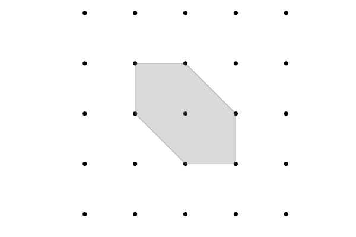

RationalPolygons.jl
RationalPolygons.jl is a pure Julia package for computations with rational polygons. A rational polygon is a convex two-dimensional polytope with vertices in $\mathbb{Q}$. It implements counting lattice points, Ehrhart Theory, normal forms, automorphism groups, computation of subpolygons as well as various classification algorithms.
RationalPolygons.jl does not make use of any external computer algebra system but implements all necessary algorithms, including two-dimensional euclidean geometry, from scratch in pure Julia. This allows for quite good performance, with computations involving billions of polygons being feasible on a personal computer.
Quick start
julia> using RationalPolygons, PlotsERROR: ArgumentError: Package Plots not found in current path: - Run `import Pkg; Pkg.add("Plots")` to install the Plots package.julia> P = convex_hull(LatticePoint{Int}[(1,0),(0,1),(-1,1),(-1,0),(0,-1),(1,-1)])Rational polygon of rationality 1 with 6 vertices.julia> plot(P)ERROR: UndefVarError: plot not defined

julia> number_of_interior_lattice_points(P)1julia> number_of_boundary_lattice_points(P)6julia> euclidean_area(P)3//1julia> ehrhart_quasipolynomial(P)1×3 Matrix{Int64}: 6 6 2julia> affine_automorphism_group(P)D6julia> is_ldp(P)truejulia> dual(P)Rational polygon of rationality 1 with 6 vertices.julia> are_affine_equivalent(P, dual(P))truejulia> gorenstein_index(P)1